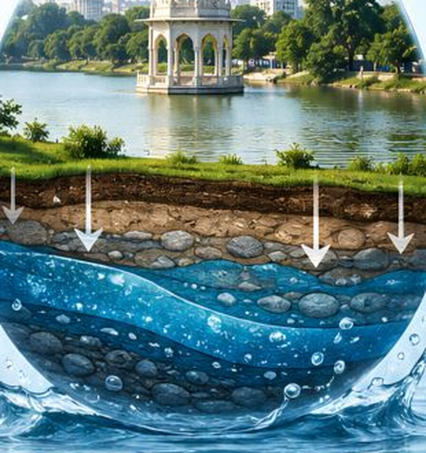
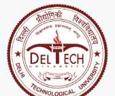
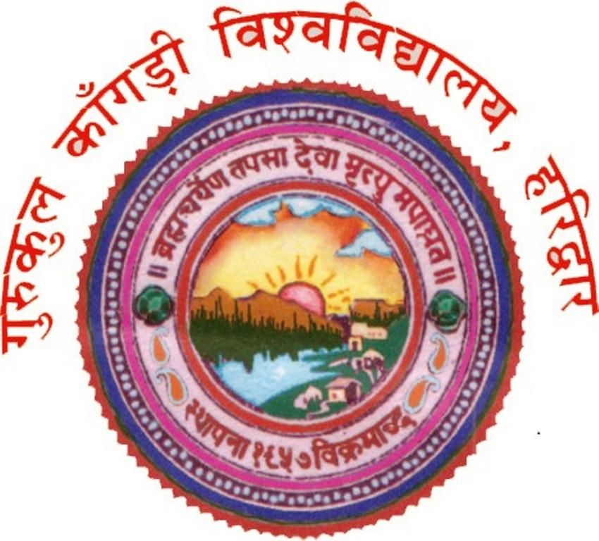
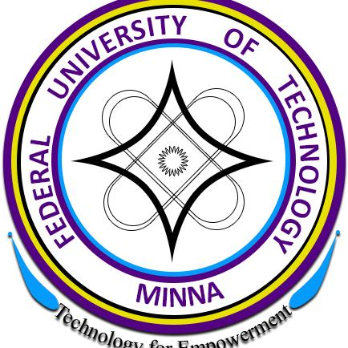

Independent research · Section 8 not-for-profit
Evidence that moves from journals into policy and practice.
Consilience Research Foundation links rigorous research with policy, technology and implementation for water, waste, climate and sustainable development, across India and overseas.
Who we are
Bridging science and society
CRF is an independent, multidisciplinary research organisation founded by a PhD researcher in Geo-Environmental Engineering. We exist because good research often fails to reach the people who need it.
- Independent research, free from undue funder or political influence
- Professionally run, not donation-dependent
- All surplus reinvested into mission-aligned impact
Bridging science and society
Academic research applied to real-world challenges.
Empowering young researchers
Mentorship, co-authorship and hands-on projects.
SDG-aligned impact
Projects designed to contribute to the UN Sustainable Development Goals.
Integrity and equity
Transparent governance and measurable outcomes.
Flagship engagement · In progress
Water Security Plan, Bakshi Ka Talab, Lucknow
Commissioned by WaterAid India: a groundwater sustainability assessment and a 20-year water security roadmap, with ward-level plans built on community consultation.

What we do
Research, consulting, training and knowledge
Research
Policy research, field surveys and academic-industry studies.
Consulting
Environmental, ESG, waste and impact assessment advisory.
Capacity building
Training, internships and institutional partnerships.
Knowledge
White papers, briefs, manuals and data dashboards.
Innovation and digital tools
Built by CRF
Modular Waste Collection Vehicle
Adjustable bin compartments based on community segregation levels. Application No. 202611118413, filed 3 October 2026 at the Indian Patent Office, New Delhi.

SWM Logbook Generator
A bilingual tool that generates 30-day, audit-ready Excel logbooks for ULB, MRF and mixed-waste facilities, aligned with the Solid Waste Management Rules, 2016.
Outputs are modelled estimates for research, education and gap analysis, not a substitute for weighbridge data.
Our researchers and interns come from
A growing academic network

Delhi Technological University IIT Roorkee
IIT Roorkee
Gurukula Kangri Vishwavidyalaya
FUT Minna VR Siddhartha Engineering College
VR Siddhartha Engineering CollegeLet us build evidence-based solutions together
Tell us about your requirement, or join us as a consultant, researcher or intern.
Get in touch Join CRF